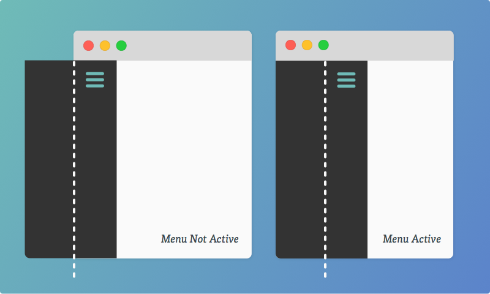

Chapter 5
"Off Canvas" patterns are different ways to approach layout where content on the web isn't just laid out in a vertical column. For instance, navigation could be positioned hidden off the left edge of the "canvas" (visible browser window) and slid in on demand.
The layout technique here is essentially a two column grid. Only the left column is 0% wide and the right column is 100% wide by default. The left column is the navigation we intend to reveal as needed. With hidden overflow, this column is completely hidden.
Below we'll take a look at our project demo and learn how to code our Off Canvas Navigation.
We always love to hear our student's feedback. Please rate this video to help us keep creating more content you'll love.

This is a quiz to test your knowledge on this lesson. Feel free to skip this quiz or ask for help.
In this chapter you've learned to utilize Off Canvas Navigational patterns for clean and organized menus. Below are a few additional resources to further help your education on this subject.